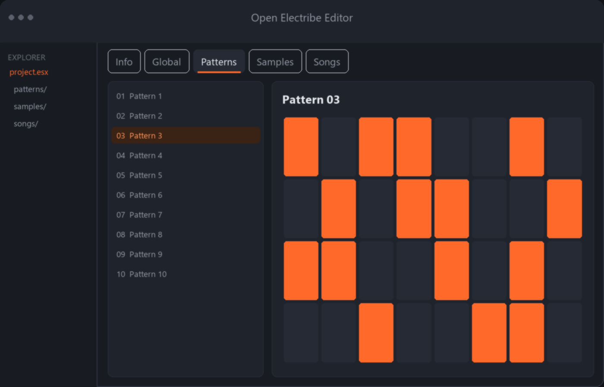
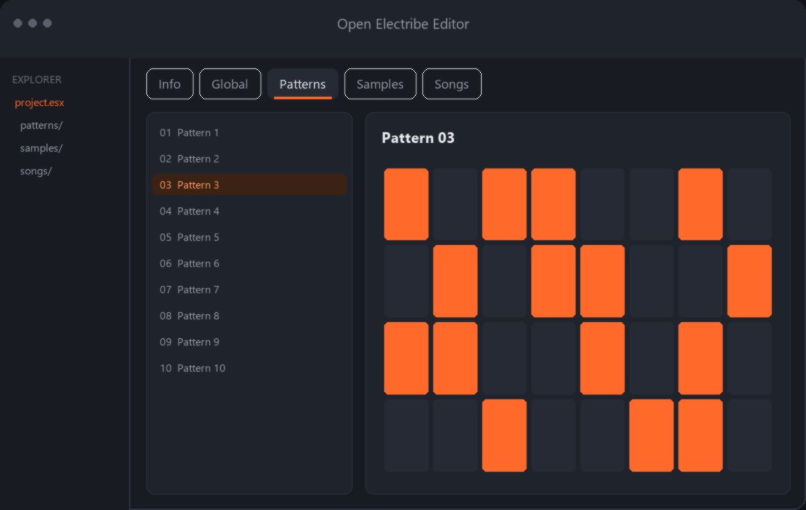
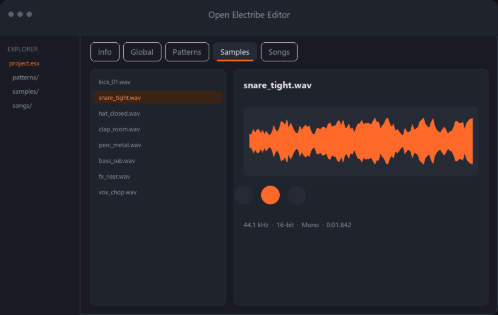

Edit your Korg Electribe .esx files right on your computer
Open Electribe Editor is a cross-platform desktop app for browsing, editing and organizing Electribe patterns, samples, songs and global parameters — without touching the device.

Everything an .esx file holds, in one editor
Six tabs cover the full contents of an Electribe project file, plus a file explorer and pattern browser to manage your library.
Info tab
Overview of file statistics: how many patterns, samples and songs are in use, and how much sample storage is occupied.
Global tab
Edit the global parameters stored in the .esx file directly, without cycling through device menus.
Patterns tab
View and edit patterns. Export or import a single pattern as .esxpat, including its referenced samples, to move it between projects.
Samples tab
Import WAV samples with optional automatic mono conversion, see the waveform, audition with the built-in player, and delete single or unused samples.
Songs tab
View and edit the songs stored in your project file.
File explorer & pattern browser
A dockable sidebar for navigating your filesystem and opening .esx / .wav / .mp3 / .aiff files, plus a browser for managing exported patterns.
A dark, focused workspace
Mockups below illustrate the tab layout described in the project README. Real screenshots will replace these once published — see the GitHub repository for the current UI.


Install Open Electribe Editor
Requires Python 3.11+ if running from source. Prebuilt binaries are currently available for Windows only.
Open the Releases page
Go to the Releases tab on GitHub and download the latest OpenElectribeEditor.exe.
Or grab a CI build
Alternatively, open Actions → the latest successful Build Windows EXE run → download the OpenElectribeEditor-windows-exe artifact (requires a GitHub login).
Run it
Unzip the artifact if needed and launch OpenElectribeEditor.exe directly — no Python installation required.
# Clone the repository git clone https://github.com/vxdy/Open-Korg-ESX-Sample-Manager.git cd Open-Korg-ESX-Sample-Manager # Create and activate a virtual environment python -m venv venv venv\Scripts\activate # Install dependencies pip install -r requirements.txt # Launch the app python main.py
# Clone the repository git clone https://github.com/vxdy/Open-Korg-ESX-Sample-Manager.git cd Open-Korg-ESX-Sample-Manager # Create and activate a virtual environment python3 -m venv venv source venv/bin/activate # Install dependencies pip install -r requirements.txt # Launch the app python3 main.py # If sounddevice can't find PortAudio: brew install portaudio
Common questions
What is a Korg Electribe .esx file?
The .esx file is the project format used by Korg Electribe workstations. It stores patterns, samples, songs and global parameters. Open Electribe Editor reads and writes this format on your computer, outside the device.
Is Open Electribe Editor free and open source?
Yes. The full source code is available on GitHub, and prebuilt Windows binaries are published on the project's Releases page at no cost.
Which operating systems are supported?
Windows and macOS are tested. A prebuilt .exe is available for Windows; on macOS you run it from source with Python. It should also run on Linux with PyQt6 and PortAudio installed, though that isn't officially tested.
Do I need to install Python to use it?
No, not on Windows if you use the prebuilt OpenElectribeEditor.exe from the Releases page. Running from source on Windows, macOS or Linux requires Python 3.11 or newer.
What is a .esxpat file?
It's the format Open Electribe Editor uses to export a single pattern together with its referenced samples, so you can move individual patterns between .esx projects.
Can I import my own WAV samples?
Yes. The Samples tab lets you import WAV files, with an optional automatic mono conversion, preview them with the built-in audio player and waveform display, and delete single or unused samples.
Does the app send any data over the network?
Under Help → Send Debug Data you can toggle whether debug/error reports are sent to a debug server, to help with troubleshooting during development. It's a setting you control from the Help menu.
Ready to manage your Electribe library?
Download the Windows build or clone the source on GitHub — it's free.